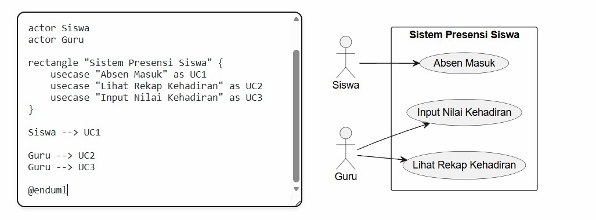
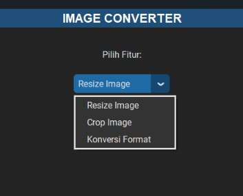
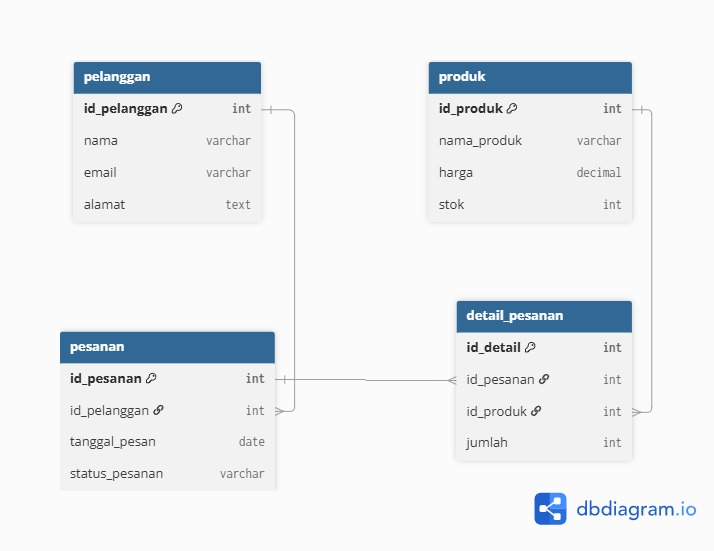

HTML & CSS
Membuat struktur web semantik dan tata letak responsif.

Pelajar Konsentrasi Pengembangan Perangkat Lunak dan Gim (PPLG) SMKS Brantas Karangkates yang antusias mendalami pemrograman web.
Membuat struktur web semantik dan tata letak responsif.
Mengembangkan aplikasi desktop menggunakan Tkinter, CustomTkinter, dan Pillow.
Mengelola database serta menyusun kueri Data Query Language (DQL).


